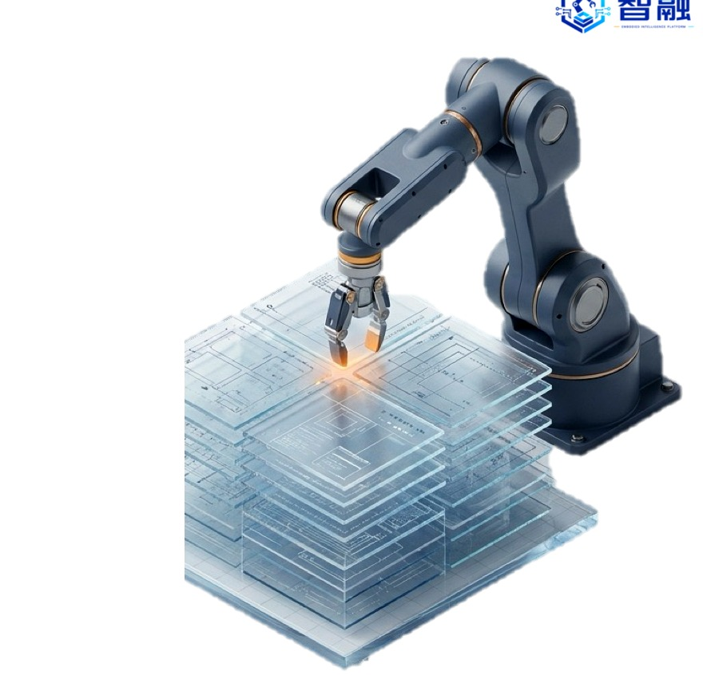

高质量具身数据难获取
接触丰富、长时域装配和柔性操作任务，往往缺少稳定、低成本、可复用的数据采集流程。
Embodied Intelligence for Manufacturing
现场数据难采、工艺经验难沉淀、复杂操作难复制。智融先从数智化底座与场景智能进入，再逐步导入具身执行系统。

Pain Points
先进制造企业通常不会一步到位采购通用机器人。更现实的路径，是先把现场数据、流程知识和人员经验整理成可计算、可训练、可复用的基础设施。
接触丰富、长时域装配和柔性操作任务，往往缺少稳定、低成本、可复用的数据采集流程。
设备状态、图像视频、力触觉、人类动作和工艺记录分散在不同系统中，难以支撑持续训练和部署。
制造现场需要理解工艺、机器人、AI 和人机协作的复合能力，单一软件或硬件交付很难形成长期闭环。
Zhirong Approach
数据接入、治理、知识沉淀、SOP 和工艺智能化。
XR 辅助、工位智能体、质检分析、培训平台与操作指导。
围绕真实工位，把模型、交互、末端执行和部署评测连接起来。
面向职业教育、产业培训和中小学具身智能课程形成第二增长曲线。
The Brain
这里不夸大单一模型能力，而是展示可落地的控制逻辑：任务拆解、过程记录、异常提示、人工接管和现场评测。
Control Logic
系统围绕 SOP、工艺步骤和设备状态建立任务上下文，在遥操、半自主和自动执行之间保留清晰切换路径。
Data Loop
团队已有 XR/AR 遥操、共享自主采集、触觉视觉融合、少样本技能学习等研究积累，官网先聚焦可验证的能力方向。
The Body & Partners
当前官网以能力与生态协同展示为主。具体型号、负载、精度等参数，应在样机定型和客户场景验证后再更新。
面向装配、检测、分拣和实验验证场景，支持与视觉、夹爪、力控和工位软件协同。
围绕灵巧末端、柔性操作、触觉/视觉融合和复杂操作数据采集探索协同。
围绕机器人本体、工位执行单元与制造场景落地，推进软硬件协同验证。
Industrial Scenarios
优先选择可付费、可验收、可复制的场景，以数智化和场景智能进入客户，再逐步扩展到具身执行系统。
面向小物件抓取、分类整理、异常提示和人工接管，逐步积累可训练的操作数据。
结合视觉识别、机械执行和工艺规则，探索高重复、强环境约束任务的柔性控制。
围绕复杂装配、检测、运维和数字化改造，服务大型装备制造中的工位级智能闭环。
通过 XR/AI 培训、操作指导和现场数据可视化，帮助企业沉淀人员经验与流程知识。
About Zhirong
智融由中科院香港创新研究院张云波教授团队推动，团队长期关注智能制造、XR/AR、人机协作、机器人学习与具身智能。公司当前更强调从真实制造场景切入，先做可验证的数智化与场景智能，再逐步进入系统级具身部署。
Wechat Contact
适合围绕数智化底座、工位智能体、XR/AI 培训、具身数据采集与机器人执行单元开展初步需求沟通。
 肖博士微信
肖博士微信